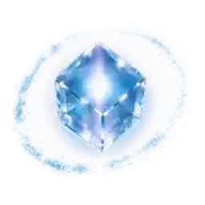

设置
秒选用的数据全部存在本地：部件表 + 中文名 + 市场价，识别后只查本地，不再联网。
- 部件表
- — —
- 价格表
- — —
- 中英对照
- —
先更新部件信息（几秒），再更新价格（1–3 分钟，可继续聊天）。
保存后立即生效；库存服务会自动重连，不用重启。
保存后立即生效，不用重启服务。
Operator，通讯链路已建立。
Ordis 已经为您准备好了始源星系的实时情报。
请输入装备名称查询市场价，或按 Ctrl+V 直接上传截图。

秒选用的数据全部存在本地：部件表 + 中文名 + 市场价，识别后只查本地，不再联网。
先更新部件信息（几秒），再更新价格（1–3 分钟，可继续聊天）。
保存后立即生效；库存服务会自动重连，不用重启。
保存后立即生效，不用重启服务。
Operator，通讯链路已建立。
Ordis 已经为您准备好了始源星系的实时情报。
请输入装备名称查询市场价，或按 Ctrl+V 直接上传截图。
